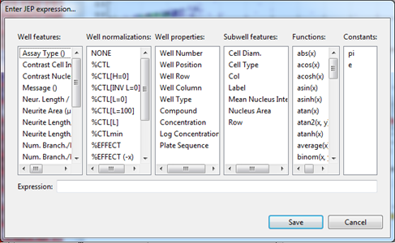

If you go to a layer in the legend, you can select different things to show on an axis. You can do this with the following buttons:

You can also select expressions here, which means you can create an expression that will be used on your selected axis. Once selected, the following dialog will appear:

You can enter your expression or simply select the different accepted elements for the expression.
E.g. log(#Max Nuc. Area#), this function can be created by clicking on the function "log(x)" in the functions column and the well feature "Max Nuc. Area". This will give you the logarithm of the Maximum Nucleus Area.
Note: The order in which you place the expression elements will make a difference. If your expression is not valid, no results will be shown in the chart.
Note: You can set the expression for ALL layers at once using the X, Y and Z buttons in the chart toolbar.
Attention: If you select different features in different layers, results may become hard to interpret.